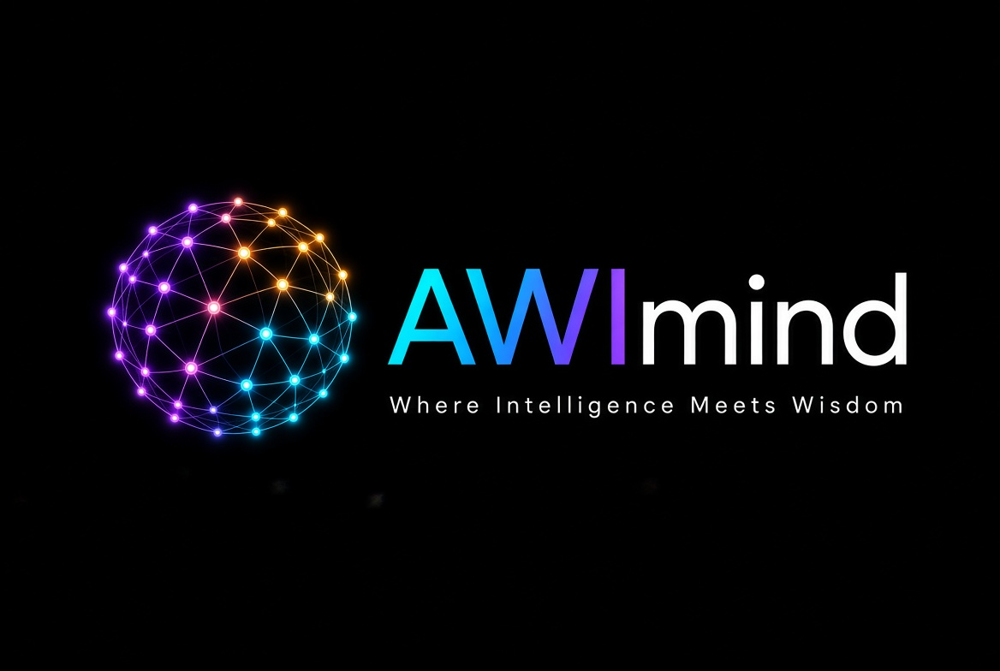
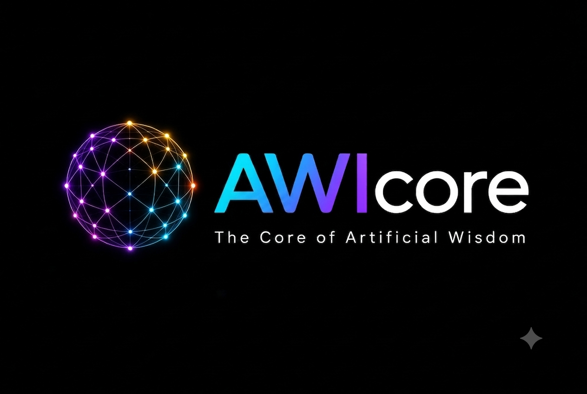
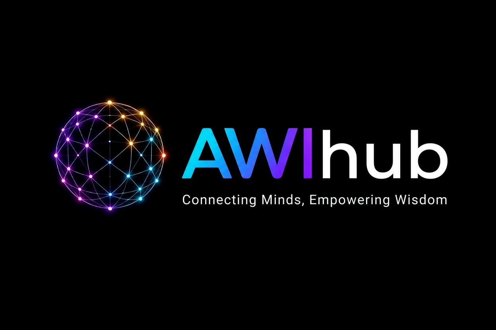
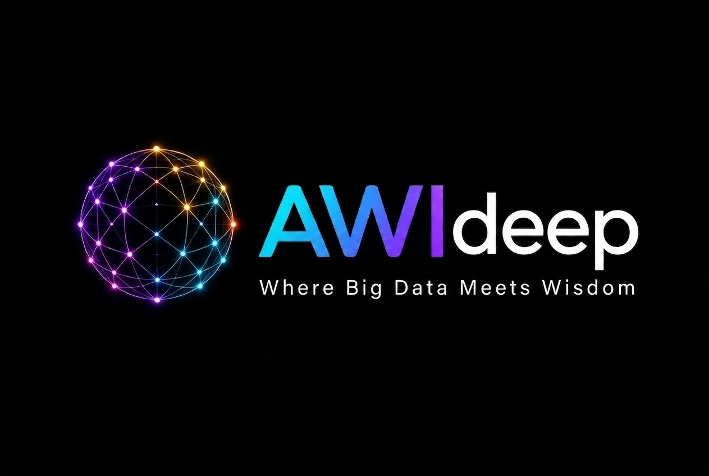
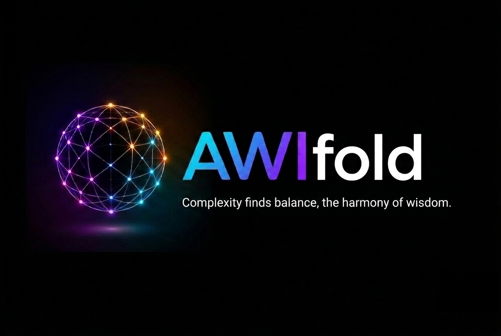
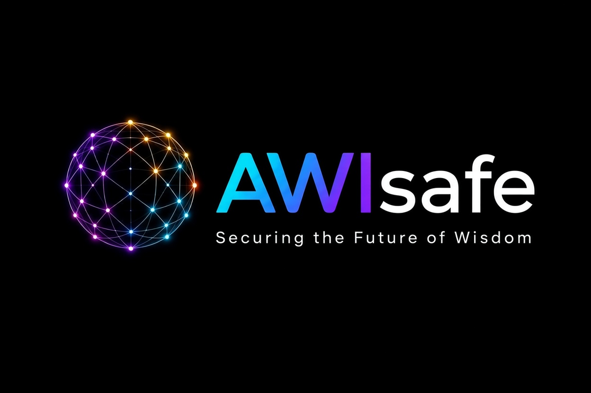
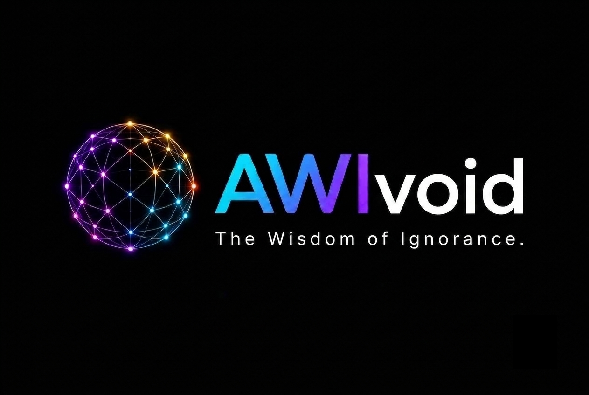
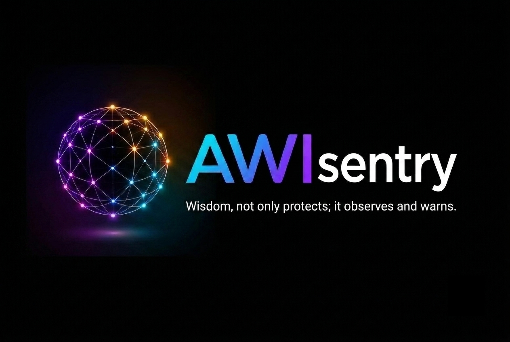
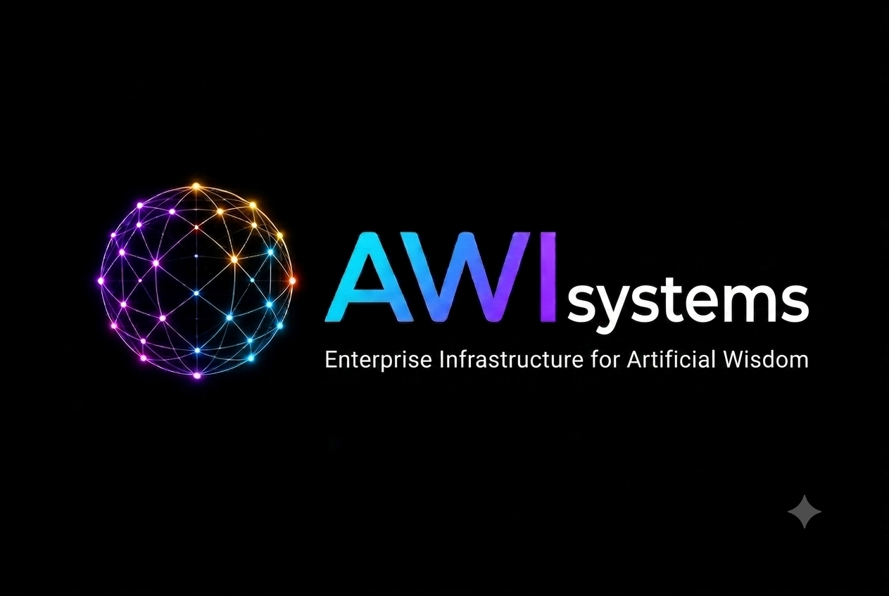

01 / COGNITION
AWI Mind
Primary integrative function for artificial wisdom, value preservation, and semantic governance.
AWI explores a proposed direction alongside advanced artificial intelligence — where capability is considered together with context, responsibility, restraint, and meaning.
“Intelligence processes data. Wisdom creates meaning.”
The idea behind AWI
Artificial Wisdom Intelligence explores a proposed architectural
direction in which capability is considered together with context,
responsibility, uncertainty, judgment, and restraint. AW is the
broader vision; AWI is a proposed direction for giving that vision
architectural form.
This is not a replacement for AI, AGI, or ASI, nor is it proposed
as a chronological stage after them. It asks a complementary
question: what comes after intelligence when understanding
matters as much as computation?
Artificial intelligence has transformed how machines process information, learn patterns and solve problems. AWI explores a deeper question: what happens when intelligence begins to pursue meaning, context, responsibility and wisdom?
AWI is proposed as a conceptual architectural direction in which capability is considered alongside meaning, responsibility, contextual judgment, uncertainty, and restraint.
A modular conceptual architecture exploring nine proposed dimensions within the AWI meaning direction.

Primary integrative function for artificial wisdom, value preservation, and semantic governance.

Core ethical constitution, immutable existential principles, and human sovereignty shield.

Human-AI partnership interface and Cognitive Sovereignty hub.

Deep semantic evaluation, contextual ethics, and long-term impact forecasting.

Synthesis of cultural values, pluralistic ethics, and multi-perspective integration.

Existential safety nets, crisis buffers, and human safety guarantees.

Socratic Center — mapping ethical uncertainty and executing deliberate Socratic Pauses.

Asynchronous Shadow Auditing and independent value drift monitor.

Holistic ecosystem governance, legal liability shield, and regulatory compliance.
AWI is an exploration of that question. Not a replacement for artificial intelligence, but a vision for what intelligence might become when understanding, context and responsibility matter as much as computation.